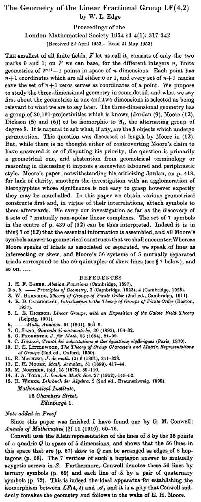

There is a remarkable correspondence between the 35 partitions of an eight-element set H into two four-element sets and the 35 partitions of the affine 4-space L over GF(2) into four parallel four-point planes. Under this correspondence, two of the H-partitions have a common refinement into 2-sets if and only if the same is true of the corresponding L-partitions (Peter J. Cameron, Parallelisms of Complete Designs, Cambridge U. Press, 1976, page 60). The correspondence underlies the isomorphism* of the group A8 with the projective general linear group PGL(4,2) and plays an important role in the structure of the large Mathieu group M24.
{kind=link}
A 1954 paper by W.L. Edge suggests the correspondence should be named after E.H. Moore. Hence the title of this note.
Edge says that
It is natural to ask what,
if any, are the 8 objects which undergo
permutation. This question was discussed at length by
Moore…**.
But, while there is no thought either of controverting Moore's claim to
have answered it or of disputing his priority, the question is primarily
a geometrical one….
Excerpts from the Edge paper—

Excerpts from the Moore paper—
Pages 432, 433, 434, and 435, as well as the section mentioned above by Edge— pp. 438 and 439
{kind=link}
{kind=link}
{kind=link}
{kind=link}
{kind=link}
{kind=link}
* J.W.P. Hirschfeld, Finite Projective Spaces of Three Dimensions, Oxford U. Press, 1985, p. 72
** Edge cited "E.H. Moore, Math. Annalen, 51 (1899), 417-44." A more complete citation from "The Scientific Work of Eliakim Hastings Moore," by G.A. Bliss, Bull. Amer. Math. Soc. Volume 40, Number 7 (1934), 501-514— E.H. Moore, "Concerning the General Equations of the Seventh and Eighth Degrees," Annalen, vol. 51 (1899), pp. 417-444.